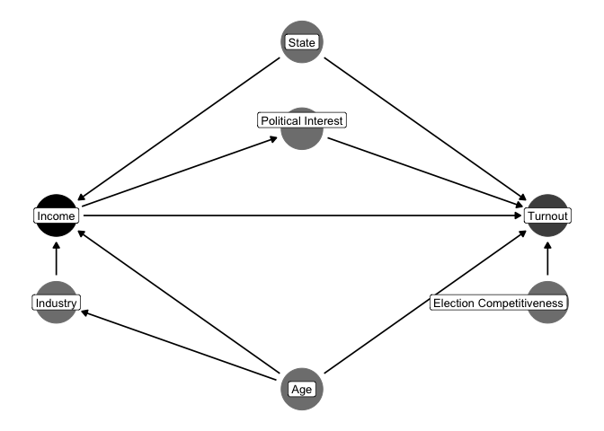
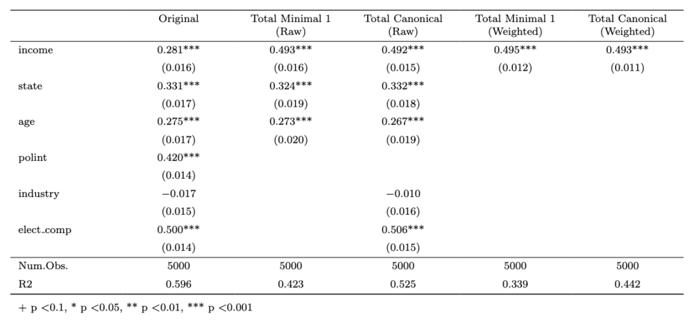
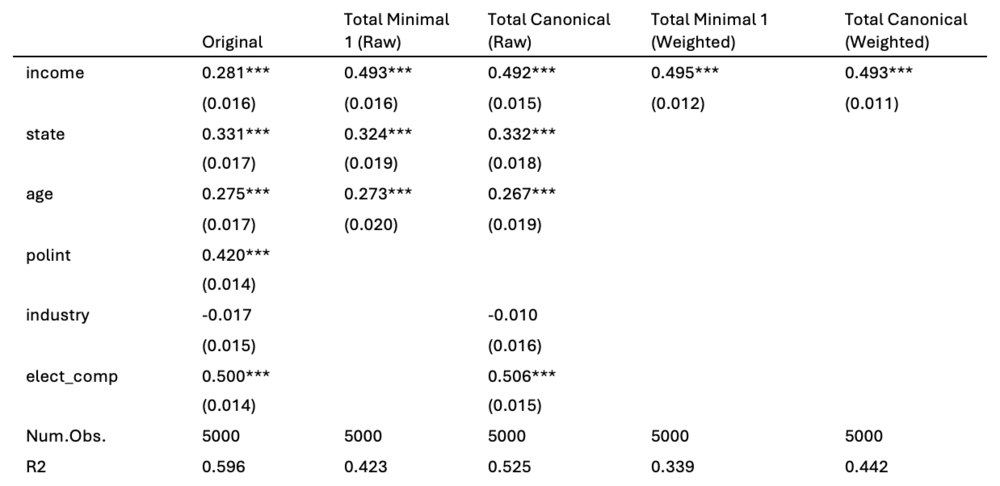
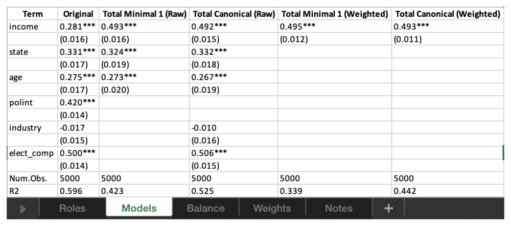
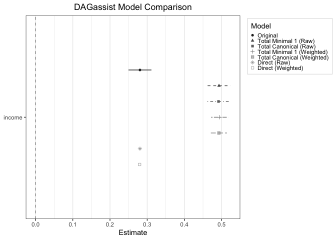

This R package enables researchers to align their regressions with their target estimands. The package provides tools for classifying DAG nodes by their causal roles, automating DAG-consistent re-estimation, and producing publication-grade diagnostic reports in LaTeX/Word/Excel/.md/.txt/dotwhisker. Uncertainty analysis functions allow researchers to check whether their conclusions survive uncertain edge directions or plausibly missing arrows.
Installation Instructions
You can install DAGassist with:
install.packages("DAGassist")
library(DAGassist) Or you can install the development version from GitHub with:
# install.packages("devtools")
devtools::install_github("grahamgoff/DAGassist")Getting Started
DAGassist is most useful at the analysis stage of the research process when researchers already have data and have conceptualized a data generating process. Before using DAGassist, create a DAG using dagitty or ggdag. Let’s start with a canonical political science example: the effect of individual income on voter turnout.

Simply provide a dagitty() object and a regression call and DAGassist will create a report classifying variables by causal role, and compare the specified regression to minimal and canonical models.
DAGassist(dag = dag_model,
formula = lm(turnout ~ income + state + age + polint + industry + elect_comp, data = df),
estimand = c("total", "direct")
)
#> DAGassist Report:
#>
#> Roles:
#> variable role Exp. Out. conf med col dOut dMed dCol dConfOn dConfOff NCT NCO
#> income exposure x
#> turnout outcome x
#> age confounder x
#> state confounder x
#> polint mediator x
#> elect_comp nco x
#> industry nct x x
#>
#> (!) Bad controls in your formula: {polint}
#> Minimal controls 1: {age, state}
#> Canonical controls: {age, elect_comp, industry, state}
#>
#> Formulas:
#> original: turnout ~ income + state + age + polint + industry + elect_comp
#>
#> Balance diagnostics:
#> legend: (S)MD compares covariate means between the Original complete-case sample
#> and each spec's sample; |(S)MD| > 0.10 flags a covariate whose sample
#> composition shifts (binary vars use a raw difference in means).
#> Original vs Minimal 1: n = 5000 vs 5000 balanced
#> Original vs Canonical: n = 5000 vs 5000 balanced
#> Minimal 1 vs Canonical: n = 5000 vs 5000 balanced
#>
#> Model comparison:
#>
#> +------------+----------+-----------------------+-----------------------+----------------------------+----------------------------+--------------+-------------------+
#> | | Original | Total Minimal 1 (Raw) | Total Canonical (Raw) | Total Minimal 1 (Weighted) | Total Canonical (Weighted) | Direct (Raw) | Direct (Weighted) |
#> +============+==========+=======================+=======================+============================+============================+==============+===================+
#> | income | 0.281*** | 0.493*** | 0.492*** | 0.495*** | 0.493*** | 0.281*** | 0.280*** |
#> +------------+----------+-----------------------+-----------------------+----------------------------+----------------------------+--------------+-------------------+
#> | | (0.016) | (0.016) | (0.015) | (0.012) | (0.011) | (0.014) | (0.027) |
#> +------------+----------+-----------------------+-----------------------+----------------------------+----------------------------+--------------+-------------------+
#> | state | 0.331*** | 0.324*** | 0.332*** | | | 0.331*** | 0.343*** |
#> +------------+----------+-----------------------+-----------------------+----------------------------+----------------------------+--------------+-------------------+
#> | | (0.017) | (0.019) | (0.018) | | | (0.017) | (0.031) |
#> +------------+----------+-----------------------+-----------------------+----------------------------+----------------------------+--------------+-------------------+
#> | age | 0.275*** | 0.273*** | 0.267*** | | | 0.275*** | 0.272*** |
#> +------------+----------+-----------------------+-----------------------+----------------------------+----------------------------+--------------+-------------------+
#> | | (0.017) | (0.020) | (0.019) | | | (0.017) | (0.028) |
#> +------------+----------+-----------------------+-----------------------+----------------------------+----------------------------+--------------+-------------------+
#> | polint | 0.420*** | | | | | | |
#> +------------+----------+-----------------------+-----------------------+----------------------------+----------------------------+--------------+-------------------+
#> | | (0.014) | | | | | | |
#> +------------+----------+-----------------------+-----------------------+----------------------------+----------------------------+--------------+-------------------+
#> | industry | -0.017 | | -0.010 | | | -0.017 | -0.014 |
#> +------------+----------+-----------------------+-----------------------+----------------------------+----------------------------+--------------+-------------------+
#> | | (0.015) | | (0.016) | | | (0.015) | (0.024) |
#> +------------+----------+-----------------------+-----------------------+----------------------------+----------------------------+--------------+-------------------+
#> | elect_comp | 0.500*** | | 0.506*** | | | 0.500*** | 0.476*** |
#> +------------+----------+-----------------------+-----------------------+----------------------------+----------------------------+--------------+-------------------+
#> | | (0.014) | | (0.015) | | | (0.014) | (0.025) |
#> +------------+----------+-----------------------+-----------------------+----------------------------+----------------------------+--------------+-------------------+
#> | Num.Obs. | 5000 | 5000 | 5000 | 5000 | 5000 | 5000 | 5000 |
#> +------------+----------+-----------------------+-----------------------+----------------------------+----------------------------+--------------+-------------------+
#> | R2 | 0.596 | 0.423 | 0.525 | 0.339 | 0.442 | | |
#> +============+==========+=======================+=======================+============================+============================+==============+===================+
#> | + p < 0.1, * p < 0.05, ** p < 0.01, *** p < 0.001 |
#> +============+==========+=======================+=======================+============================+============================+==============+===================+
#>
#> Weight diagnostics:
#> legend: w range reports the min-max weights by group; ESS is kish effective sample size.
#> Total Minimal 1 (Weighted): w range=0.01318..67.41 | ESS (weighted)=1429.07 [LOW_ESS,EXTREME_W]
#> Total Canonical (Weighted): w range=0.01075..74.93 | ESS (weighted)=1236.84 [LOW_ESS,EXTREME_W]
#>
#> Roles legend: Exp. = exposure; Out. = outcome; CON = confounder; MED = mediator; COL = collider; dOut = descendant of outcome; dMed = descendant of mediator; dCol = descendant of collider; dConfOn = descendant of a confounder on a back-door path; dConfOff = descendant of a confounder off a back-door path; NCT = neutral control on treatment; NCO = neutral control on outcomeDAGassist supports diagnostics across popular file formats:
The console output above is the same object rendered as text. The exports below were produced by the same call, changing only type = and out = (see dev/output_types.R):
formats <- c(latex = "latex.tex", word = "word.docx",
excel = "excel.xlsx", dotwhisker = "dw.png")
for (fmt in names(formats)) {
DAGassist(dag = dag_model,
formula = lm(turnout ~ income + state + age + polint + industry + elect_comp, data = df),
estimand = "total",
type = fmt,
out = formats[[fmt]])
}|
 LaTeX ( tabularray)
|
 Word |
|
 Excel |
 dotwhisker |
{kind=link}
{kind=link}
{kind=link}